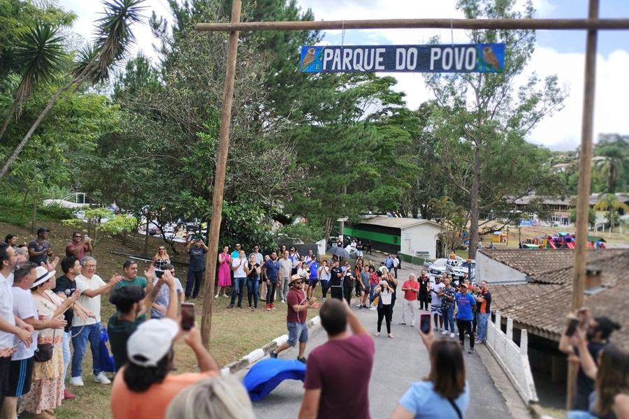

Visite Itapecerica da serra
Aproveite as atrações e eventos nessa tradicional cidade no interior do estado de São paulo.
Top três atividades para se aproveitar em Itapecerica da serra

Pratique esportes
Parque localizado a [...] de distancia do centro. Possui quadras esportivas de basquete,tênis e Futebol. Além de um ótimo espaço verde para crianças.
Faça compras e passeie no shopping
O shopping municipal de Itapecerica da serra possui varias lojas como Renner,C&A entre outras. Também é possivel assistir a filmes no cinema.
Acalme a sua mente
Passem tempo meditando no templo budista mais antigo da cidade. O templo Kinkakuji é uma réplica do original localizado no Japão.
Seu Guia Turístico
Eu vivo em Itapecerica da serra por toda a minha vida. Posso mostrar varios pontos locais e suas historias nativamente.
Fulano de tal